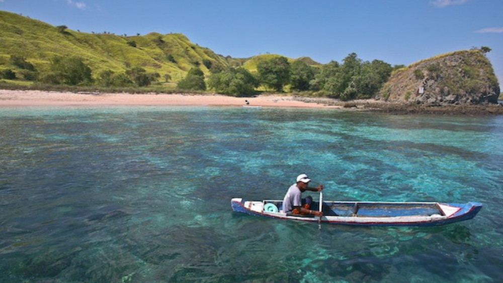

|  | Tidak sedikit pelancong yang rela melawan atau menelusuri daerah tertentu untuk mendatangi wisata alam yang masih perawan. Di Kupang nama pantai Neam masih belum banyak didengar dan dikunjungi orang. Karena itulah, pantai yang tersembunyi di balik belantara hutan ini masih memiliki keindahan yang asri. Meski harus melalui perjalanan jauh selama 3 jam dari kota kupang, pantai Neam akan menyambut Anda dengan pasir putih yang asri. Beberapa batu karang pun bertebaran di bibir pantainya, namun yang membuatnya semakin menarik adalah kehadiran gua misterius yang dikelilingi pepohonan. Keindahan alami inilah yang menjadikannya layak untuk di kunjungi. |